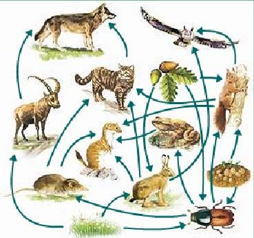
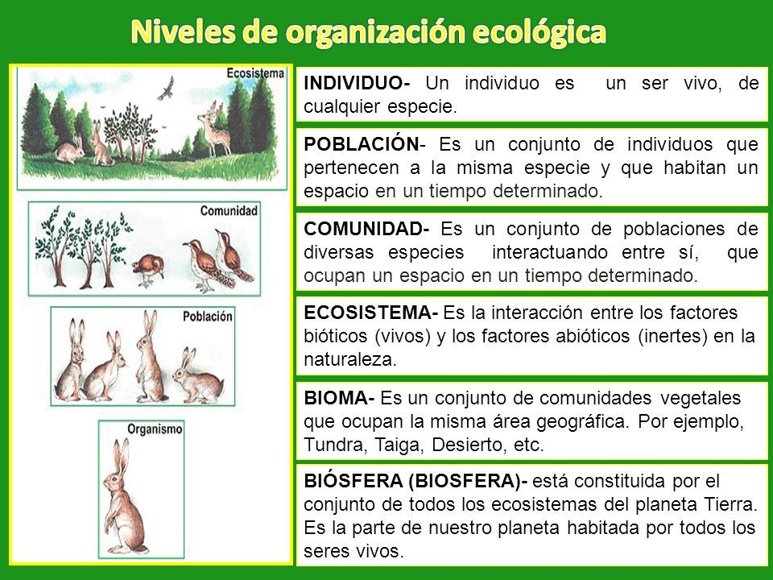

Ecología (Logos- Estudio o tratado, oikos-casa) es el estudio de la relación entre los seres vivos y su ambiente, específicamente se ocupa de analizar la influencia de unos sobre otros. Cuando hablamos de ambiente estamos considerando ciertas propiedades físicas que se definen como factores abióticos locales, y esto incluye el clima, la geología y organismos que conviven en dicho ambiente.
La ecologia es una ciencia multidisciplinaria, ya que en un ecosistema existen interacciones que conllevan procesos quimicos,fisicos y biologicos.Las ciencias que tienen estrecha relacion se muestran en la siguiente tabla:
CIENCIA |
APORTACION |
Fisica y Quimica |
Conocimientos sobre las transformaciones de materia y energia. |
Paleontologia |
Estudia los cambios sufridos por organismos que vivierón anteriormente. |
Genetica |
Estudia la estructura, composicion, metabolismo de la informacion hereditaria. |
Microbiologia |
Estudia los microorganismos de los reinos Monera, protista y fungi. |
Economia |
Estudia el aprovechamiento de recursos naturales. |
Cartografia |
Estudia los mapas y facilita la localizacion de los ecosistemas. |
Geografia |
Estudia las descripciones de relieves, flora y fauna, climas, etc. |
Sociologia |
Estudia el conocimiento sobre fenomemenos de la sociedad humana como la explosion demografica |
Meteorologia |
Ayuda a entender como las variaiones en las condiciones del clima en una region dada influyen en la biodiversidad. |
Politica |
Conocimientos sobre el marco jurídico ambiental. |
Matematicas |
Conocimientos para llevar a cabo estimaciones numéricas. |
La autoecología es el escalón más básico de laecología que estudia las especies en relaciónal eslabón superior. Se encarga del estudiode las adaptaciones de una especie a los factoresabióticos.
Estudia las relaciones entre las distintas especies de una comunidad o biocenosis y entre los ecosistemas de la Tierra.Esta rama de la ecologia estudia la composición y estructura de las comunidades formadas por especies diferentes; los cambios queocurren en el tiempo; las relaciones entre las especies de la comunidad.



(Maria Eugenia Mendez Rosales (2015). Ecologia y medio ambiente. Mexico: Book Mart, S.A de C. V, (2018, 9 de mayo).